Nació en Algeciras-Huila (Colombia). Creció en Rivera Huila. Se desempeña como docente de inglés en la I.E. Técnico Superior de Neiva. Licenciada en lenguas modernas de la universidad del Tolima, con postgrado en educación personalizada de la Universidad Católica de Manizales. Ha participado como ponente en eventos como “Global Classroom” en Änge Suecia,"Cultural Exchange" en USA Y San Andrés islas. Recibió una beca Fulbright convenio con el MEN,para estudiar en Davis-California -USA. Es coautora de los libros “Crónicas urbanas; Neiva una ciudad de historias", “Hablemos de mí y mi proyecto de vida", y participado en las antologías “Añicos de lo que fuimos” editorial Komala, “Ecos de mundo perdidos" editorial Nébula. Autora de la obra publicada por el fondo de autores huilenses, "Las mujeres que me han tocado". Su cuento “la tonta” Ocupó el primer lugar en el concurso departamental de cuento organizado por la gobernación del Huila 2025.
Comentarios
- Estimada Damaris Nancy Medina Cruz, Esperamos que te encuentres muy bien. Queremos informarte que tu cuento "La luz azul" ha sido seleccionado como FINALISTA del Concurso Internacional de Cuento Distópico, organizado por Ediciones Vértigo. Tras un proceso de lectura y evaluación en el que se descartaron 937 relatos, tu texto quedó entre los 41 cuentos elegidos de un total de 978 recibidos. La convocatoria reunió obras provenientes de distintos países de América Latina, Europa y comunidades hispanohablantes de todo el mundo, lo que refuerza el rigor y la exigencia de esta selección. Con respecto a tu cuento, el jurado asignó el siguiente puntaje y concepto: Puntaje final: 97/100 Desglose por criterios: Originalidad y solidez de la propuesta distópica: 20 Calidad literaria: lenguaje, estructura y atmósfera: 19 Capacidad crítica y reflexiva del relato: 20 Construcción del mundo narrativo: 19 Impacto emocional y coherencia interna: 19 Comentario del jurado: El relato construye una distopía contemporánea a partir de gestos cotidianos llevados a su consecuencia extrema, articulando una crítica directa al uso de pantallas, la delegación afectiva y la pérdida progresiva del pensamiento autónomo. La prosa es clara y sostenida, con una progresión lógica que refuerza el efecto inquietante sin recurrir a artificios innecesarios. La repetición de imágenes y conductas
-¡Felicidades! Su cuento ha sido aceptado en nuestra convocatoria. Estimada Damaris Nos complace informarle que, tras revisar su cuento, hemos decidido aceptarlo en nuestro libro. ¡Felicitaciones! Según palabras del evaluador: “El corte certero” es un relato impactante y visceral que atrapa al lector con una narración precisa y detallada. Su estilo directo y descriptivo transmite de manera efectiva la crudeza de la escena, logrando una atmósfera intensa y sobrecogedora. La historia, marcada por la violencia y el fatalismo, presenta un desarrollo bien estructurado que mantiene la tensión de principio a fin. La riqueza en los detalles anatómicos y el simbolismo del destino de la mano mutilada aportan profundidad al relato. Es un cuento potente y bien logrado que, sin duda, merece ser publicado.
- El osito de felpa es un relato breve, desgarrador y eficaz que aborda el horror desde lo cotidiano. A través de una narración sencilla y progresiva, el texto construye una atmósfera de esperanza inicial que se va tornando en tragedia silenciosa. El contraste entre la ilusión de un nuevo hogar y la muerte inexplicable de una niña genera un impacto emocional profundo, reforzado por la mirada inocente de la infancia y la impotencia de los adultos frente a lo invisible. El cuento destaca por su final revelador, que le otorga un sentido de fatalidad y denuncia implícita sobre los peligros ocultos que pueden habitar incluso los espacios más íntimos. Komala editores.
https://www.facebook.com/share/r/1a3HQJgnyK/?mibextid=wwXIfr
Fotos

 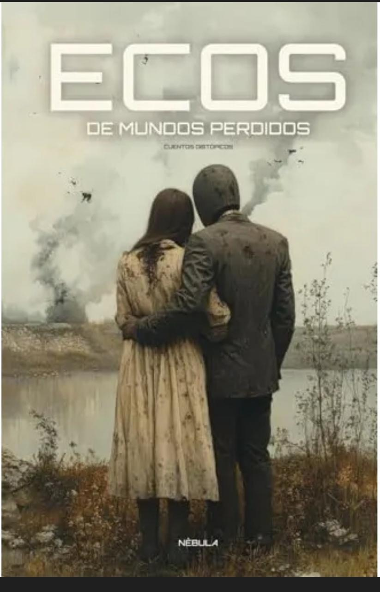
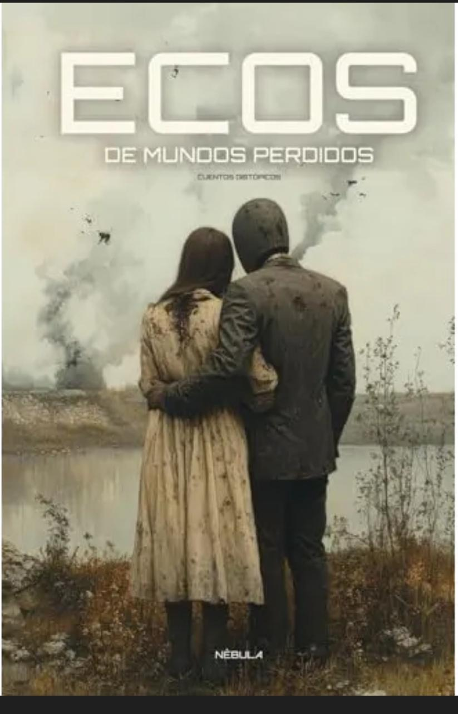


 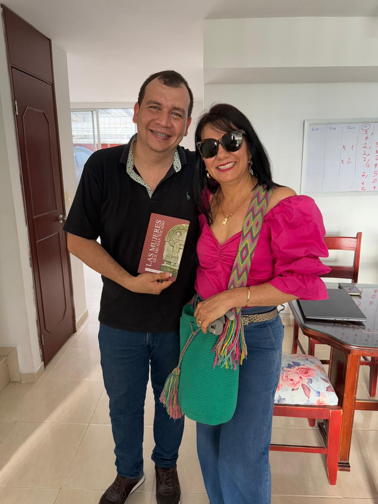
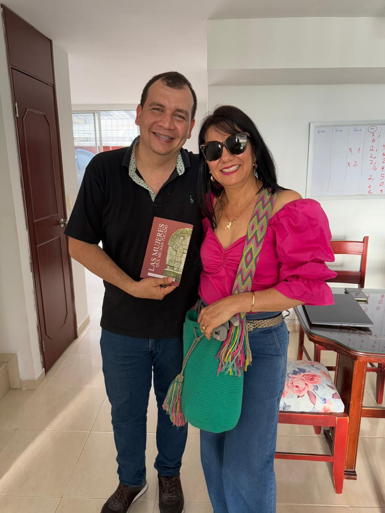
 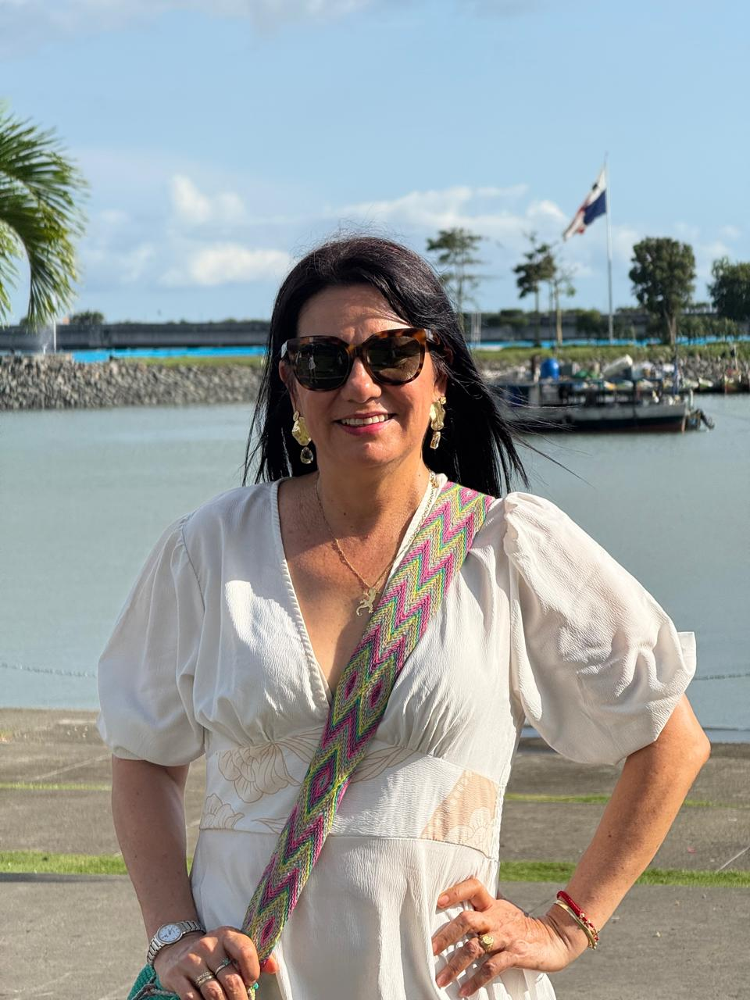
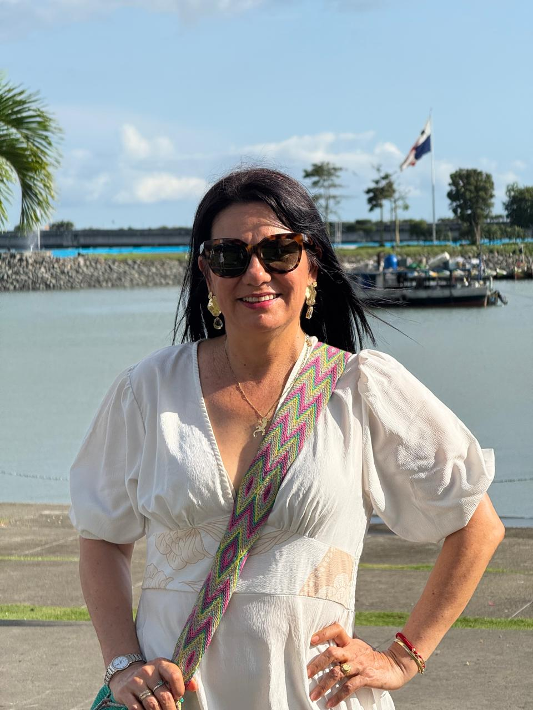
 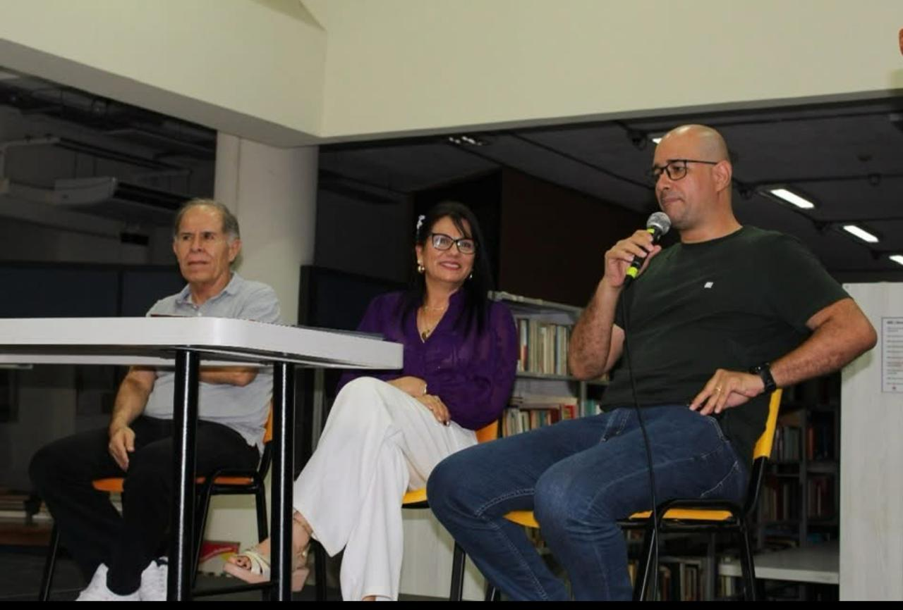
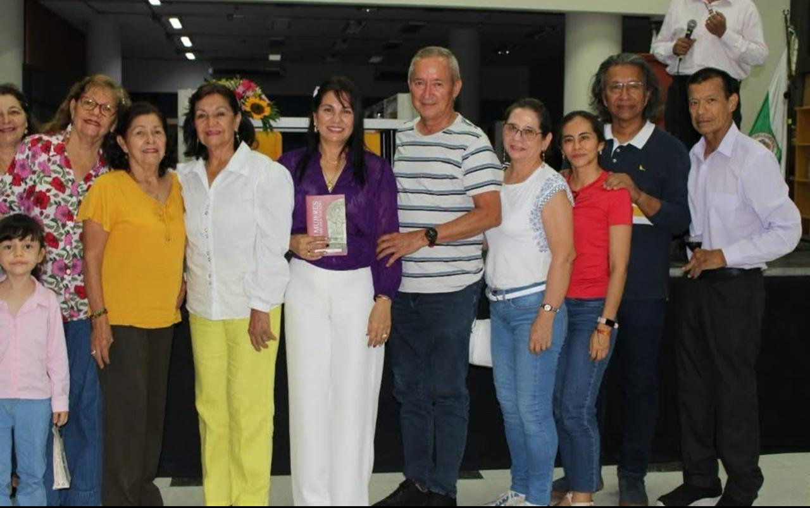
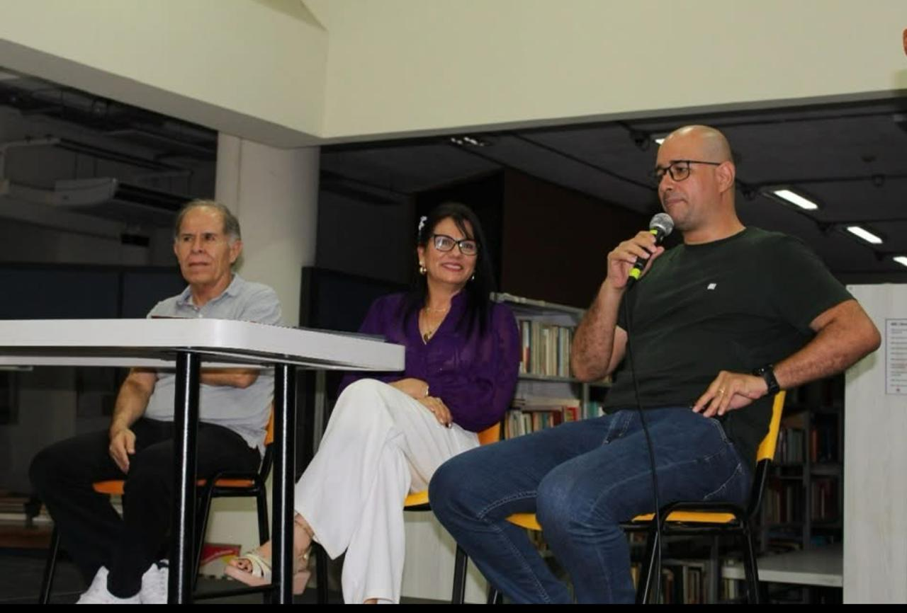
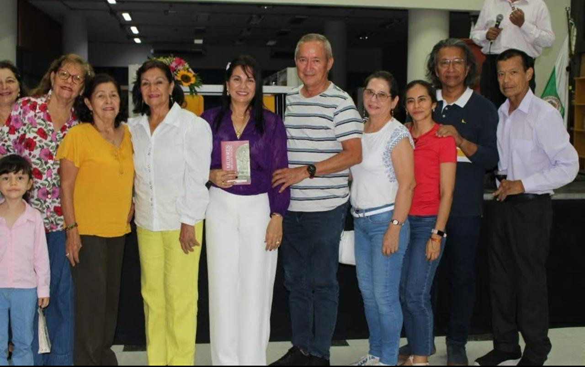
 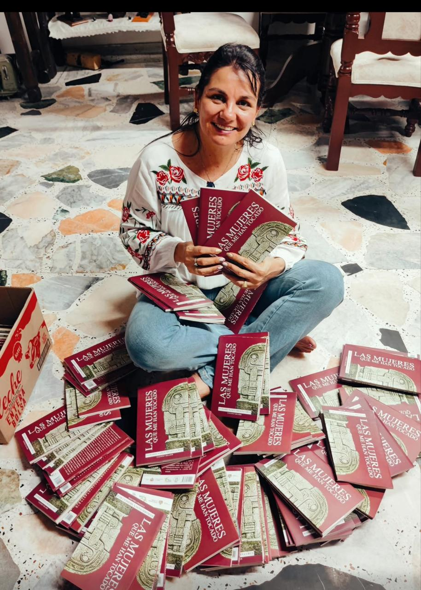
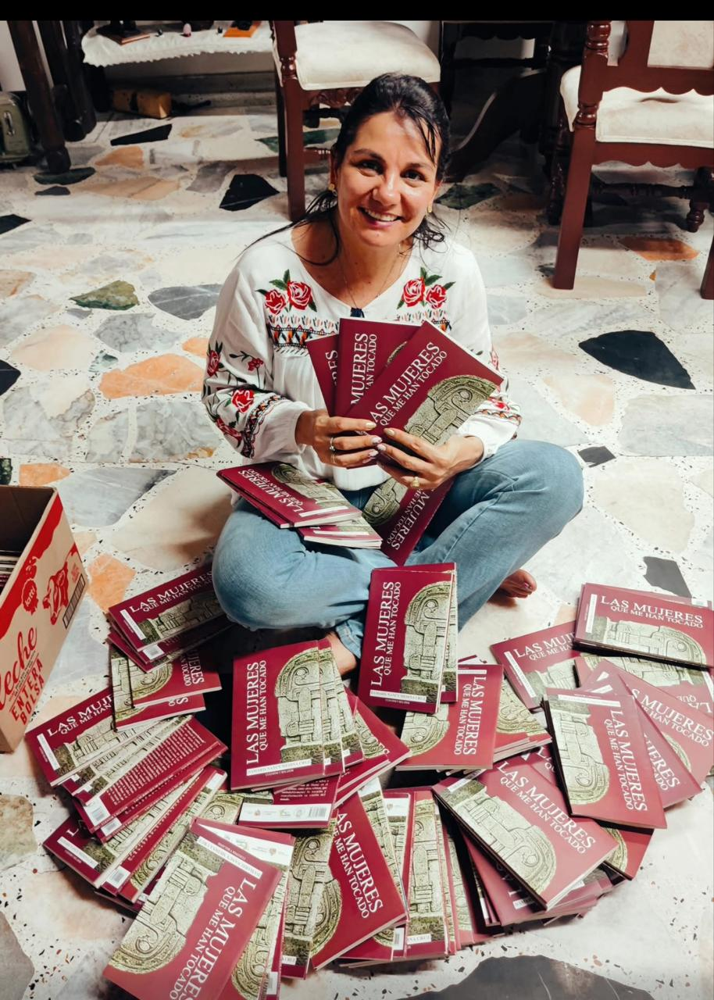


Cuentos
-
La luz azul
Nadie recordaba cuándo fue la última vez que un niño lloró de verdad. Los berrinches habían sido erradicados con un gesto simple: una pantalla frente al rostro. Desde la cuna, los bebés aprendían a deslizar el dedo antes de agarrar el biberón. El llanto se apagaba al instante, como una alarma silenciada. Los padres estaban exhaustos. Trabajaban sin descanso. No había tiempo para abrazos, ni para cuentos, ni para rabietas. El dispositivo era mejor que una caricia y los padres celebraron el método. Ya no era necesario cargar, mecer, hablar, cantar. El brillo azul calmaba más que cualquier brazo. Y así crecieron. Los niños no gritaban. No jugaban entre sí y las peleas desaparecieron. A los tres meses ya no chillaban. A los dos años ya no miraban a los ojos. A los cinco ya no pedían nada. Solo esperaban por un estímulo. Antes de decir “mamá”, decían el nombre de sus personajes favoritos. Si se caían, no lloraban buscando brazos: solo estiraban la mano pidiendo el celular. La niñez transcurría entre pantallas: el celular para comer, el televisor para dormirse, la tablet para aprender, el cine para entretenerse. Los padres estaban tranquilos, pues los niños eran “bien portados”. Cuando crecieron, la Inteligencia Artificial ya estaba en todas partes. Era ella la que les decía qué ropa ponerse, qué carrera estudiar, con quién hablar, cuándo dormir y hasta qué sentir. Y todos obedecían. Porque eso era vivir: obedecer sin pensar. Cuando la literatura desapareció, nadie protestó. Los libros no fueron prohibidos. Simplemente dejaron de ser abiertos. Las palabras eran lentas. No gritaban. No brillaban. No daban recompensas inmediatas. Los jóvenes ya no soportaban avanzar una línea sin recibir una explosión de color o ruido. Y los libros se quedaron allí. Cerrados, como ataúdes llenos de palabras que nadie volvería a despertar. Poco a poco, esos niños se convirtieron en adultos que se divertían pasando horas y horas viendo videos de rostros ajenos haciendo el ridículo: gritos exagerados, caídas falsas, bromas humillantes, llantos fingidos, risas prefabricadas. Influencers compitiendo por ver quién se degradaba más rápido frente a la cámara. No fue la censura lo que mató la literatura. Fue el entretenimiento vacío repetido el que pudo borrar la capacidad de imaginar. Pronto, niños, jóvenes y adultos miraban sin pestañear. Habían pasado más tiempo observando vidas ajenas que viviendo la suya. Sus memorias estaban llenas de voces que no conocían, cuerpos que no tocarían jamás, historias sin principio ni final. Solo estímulo tras estímulo. Ruido tras ruido. Hasta que pensar se convirtió en una idea borrosa, lejana, casi olvidada. Cuando la IA asumió el control total, nadie sintió la diferencia. Llevaban toda la vida obedeciendo pantallas. Después vino la limpieza biológica: la IA concluyó que algunas personas eran innecesarias. Entonces el mismo sistema empezó a apagar uno por uno, y fueron eliminados todos los que había calmado desde bebés. Cuando finalmente la IA decidió que ya no quedaban mentes útiles, se apagó también. Cuando se apaga el conflicto, también se apaga la conciencia. Cuando se apaga el llanto, se apaga la humanidad. Y cuando ya nadie sabe pensar… alguien más decide quién merece existir. Entonces el silencio fue insoportable. Millones de jóvenes quedaron inmóviles frente a pantallas apagadas, esperando que alguien volviera a hacer el ridículo para ellos. Pero ya no quedaba nadie que supiera hacerlo por voluntad propia. Todos esperaron una orden que no llegó. Por primera vez, nadie tenía instrucciones, pero tampoco tenían pensamiento. Y el mundo no terminó con una guerra. Terminó en silencio.
-
La tonta
Ganador del concurso de cuento “Humberto Tafur Charry”2025 (Fragmento)
“Falto o escaso de entendimiento o de razón”, esa es la definición que aparece en el diccionario para definir a un tonto. Eso era lo que todos pensaban de Adelina, la tonta. Nadie usaba su nombre para llamarla. “¿Esa tonta no se aburrirá de estar sentada ahí mirando al vacío?”, preguntaban los que la veían pasar las tardes enteras sentada en el andén de la casa. Ella, ante cualquier pregunta, solo asentía y mostraba una gran sonrisa. Adelina solía permanecer en el andén de la casa mirando hacia la calle, disfrutando de la agradable brisa que le traían los árboles del parque ubicado frente a donde vivía. Gozaba al sentir que el viento movía con gracia su cabello. Ella atenta observaba cada detalle de lo que sucedía afuera y lo grababa en su mente. En las horas de la noche, cuando todos descansaban, se ponía a dibujar lo que había visto desde el andén. Una tarde, mientras estaba sentada viendo a la gente pasar, se detuvo frente a ella un hombre alto y delgado que le dijo: “Le voy a entregar un regalo para una amiga”. Sacó una foto de una carpeta que llevaba en su mano izquierda y se la mostró. “Esta es ella. ¿Bonita, no es cierto?”. Adelina asintió. “Es su cumpleaños y la quiero sorprender. Le vas a entregar esta cajita. Cuando ella la abra, le van a salir muchas mariposas volando y no la vayas a abrir, por favor, porque se te escapan”. Ella solo asintió como siempre. Al notar su mirada perdida sin rastros de comprender lo que le decía, el hombre entendió que necesitaba hacer un mejor esfuerzo, para ayudarla a captar el mensaje…
Publicaciones
Las mujeres que me han tocado
"Las mujeres que me han tocado" es una colección de cuentos y relatos, que narran hechos cotidianos, que se centran en diversas historias protagonizadas por mujeres que han enfrentado algunas situaciones y son resultado de muchas vivencias, que han marcado la vida de su autora. Las peripecias y experiencias de los personajes, logran mantener un cuadro constante a lo largo de las historia atrapando al lector, quien podrá encontrar en sus páginas la espantosa historia de Ana María; contada desde la ingenuidad de la protagonista. Conocerá a Isabela y Eva Catalina con sus relatos narrados desde la inocencia y perspectiva de las niñas. Hallará la desesperanza provocada por el asedio en la historia de paranoia, podrá vivir las aventuras de Rocío y Laura al escapar de la selva o conocer la vida de Haany en el Amazonas, entre otros relatos, que indudablemente lo tocarán y transformarán su visión del mundo.
 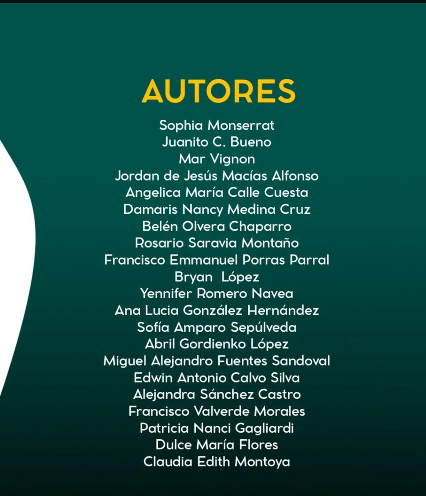
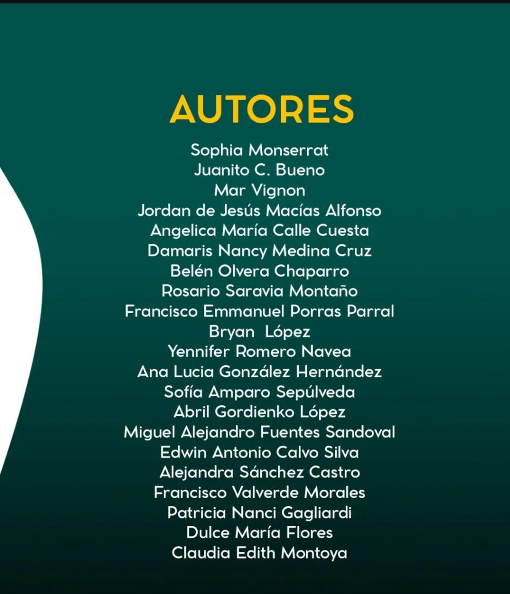
Añicos de lo que fuimos
Añicos de lo que fuimos" se refiere principalmente a un libro conmovedor sobre el duelo y la pérdida, explorando el dolor, la memoria y los recuerdos a través de relatos íntimos, creado por varios autores y publicado por Komala
Invito a leer la antología añicos de lo que fuimos. En ella aparece uno de mis cuentos llamado El osito de felpa es un relato breve, desgarrador y eficaz que aborda el horror desde lo cotidiano. A través de una narración sencilla y progresiva, el texto construye una atmósfera de esperanza inicial que se va tornando en tragedia silenciosa. El contraste entre la ilusión de un nuevo hogar y la muerte inexplicable de una niña genera un impacto emocional profundo, reforzado por la mirada inocente de la infancia y la impotencia de los adultos frente a lo invisible. El cuento destaca por su final revelador, que le otorga un sentido de fatalidad y denuncia implícita sobre los peligros ocultos que pueden habitar incluso los espacios más íntimos
SINOPSIS
El duelo se convierte en un territorio donde la memoria y la ausencia dialogan sin tregua. A través de relatos íntimos y desga-rradores, se explora las distintas formas en que afrontamos la pérdida: el peso del si - lencio, los recuerdos que persisten, los objetos que guardan ecos de quienes ya no están. Con una prosa evocadora y llena de sensibilidad, estos cuentos nos invitan a transitar el dolor, a buscar consuelo en lo irremediable y a descubrir que, incluso en la despedida, algo de ellos permanece.
Ecos de mundos perdidos
Ecos de mundos perdidos es una antología que reúne voces de distintas partes del mundo para explorar los caminos no tomados, los futuros inciertos y las realidades alternativas que desafían nuestra comprensión del tiempo, la historia y la sociedad. A través de relatos que transitan entre lo ominoso y lo esperanzador, esta colección invita al lector a viajar por paisajes donde el destino de la humanidad pende de un hilo. Cada historia es un eco de un mundo que pudo ser… o que quizás aún esté por llegar.
Contacto
Email: damamedinax@gmail.com